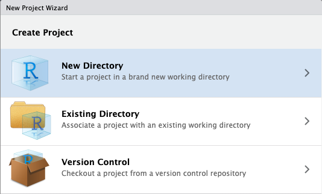
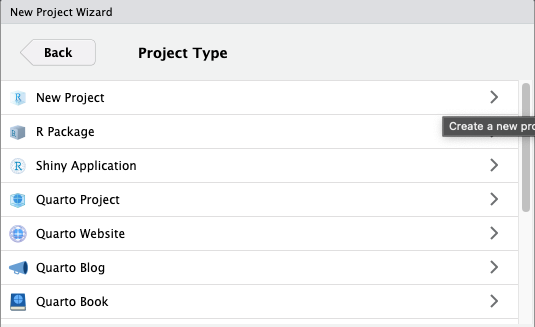
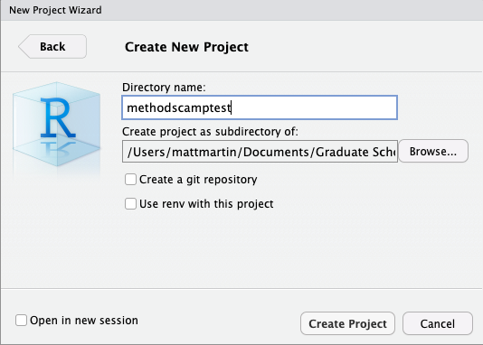

getwd()9 Wrap-up
9.1 Project management
9.1.1 RStudio projects
RStudio projects are an excellent way to keep all the files associated with a project (data, R scripts, results, figures, etc.) in one place on your computer.
This is one of the best ways to improve your workflow in RStudio, allowing you to:
- Create a project for each paper or data analysis project.
- Store data files in one place.
- Save, edit, and run scripts.
- Keep outputs such as plots and cleaned data.
To create a new project file, click
File > New Project, then:


Call your project some version of “methodscamptest” and choose carefully where you wish to store the project on your machine.
Warning
If you don’t store your project (and your other files, too!) somewhere reasonable, it will be hard to find it in the future! We recommend creating a clear organizational scheme for yourself early on.
9.1.1.1 Using RStudio projects
When using an RStudio project, you should see its name in the top-right corner of RStudio, next to a light blue icon. You can check with R the folder in which your project operates:
- Now, as an example, let’s run the following commands in the script editor and save the files into the project directory.
library(tidyverse)
my_plot <- ggplot(mtcars, aes(wt, mpg)) +
geom_point()
ggsave(plot = my_plot,
filename = "plot_mtcars.pdf")
write_csv(mtcars, "mtcars.csv")Quit RStudio and check out the folder associated with the project.
You should see the PDF file for the plot, the .csv file for the data, and the
.Rprojfile for the project itself.Double-click the
.Rprojfile to reopen the project and pick up where you left off! Everything you need should be ready to go.
9.2 Quarto documents and R Scripts
We have worked with .qmd scripts during Methods Camp. Quarto is a very flexible format that allows code, math, and text. People use it to make reports (PDF or HTML), presentations, websites, etc. You can create a Quarto document from RStudio using File > New File > Quarto Document, and then compile it to its final form using the “Render” button.
You should also be aware of regular R scripts, with a .R extension. They can be created in RStudio using File > New File > R Script. They just allow code: to add comments, you need to preface them by the pound sign (#).
9.3 Other software resources
9.3.1 Overleaf

Overleaf is a collaborative cloud-based LaTeX editor designed for writing, editing, and publishing documents.
- LaTeX is a software used for typesetting technical documents. It is used widely in our discipline for the preparation for manuscripts to journals and other publishing venues.
UT Austin actually provides free access to Overleaf Professional to graduate students using your UT email. (The Professional accounts allows more collaborators on projects and other goodies.)
Exercise
Create an Overleaf Professional account using your UT email address. You can do so here.
Important
\[ \hat{\beta} = (X'X)^{-1}X'Y \]
LaTeX is actually the markup language that the math in Quarto and this website! If you are curious about general syntax and commands, you can access our repository at any time to get a closer look.
9.3.2 Zotero

Zotero is an open-source reference manager used to store, manage, and cite bibliographic references, such as books and articles.
When it is time to write, you can insert your sources directly into your paper as in-text citations via a word processor plugin, which generates a bibliography in your style of choice (e.g., APA). It works with Word, Google Docs, Overleaf, and RStudio.
- This can save a lot of time, especially when you have to change citation styles for submission to another journal.
You can download the software for free here.
Note
Zotero is one of many other reference managers out there. Alternatives include Mendeley and EndNote, among others. You should choose whatever option best suits your needs.
9.4 Methods at UT
9.4.1 Required methods courses
Scope and Methods of Political Science
Statistics I (Statistics/linear regression)
Statistics II (Linear regression and more)
Statistics III (Maximum likelihood estimation)
- Only required if your major field is methods
9.4.2 Other methods courses
Statistics / Econometrics / Machine Learning:
- Causal Inference
- Bayesian Statistics
- Math Methods for Political Analysis
- Time Series and Panel Data
- Panel and Multilevel Analysis
- Network Analysis
- Machine Learning in Political Science
- Making Big Data
Formal Theory
- Intro to Formal Political Analysis
- Formal Political Analysis II
- Formal Theories of International Relations
Everything else
- Conceptualization and Measurement
- Experimental Methods in Political Science
- Qualitative Methods
- Seminar in Field Experiments
9.4.3 Other departments at UT
You can also take courses through the Economics, Business (IROM), Sociology, Mathematics, or Statistics (SDS) departments.
Software and Topic Short Courses at SDS (see their Events page): R, Python, Stata, etc.
9.4.4 Methods Fellow
The Methods Fellow is a grad student who serves as a Methods TA for all other UT Gov grad students.
- Holds office hours
- Hosts a Methods Co-working Hour
- Organizes workshops
9.4.5 Methods summer programs
9.4.6 More methods camps!
-
- Check out the PDF download!
-
- Make sure to follow the links for the videos, etc.